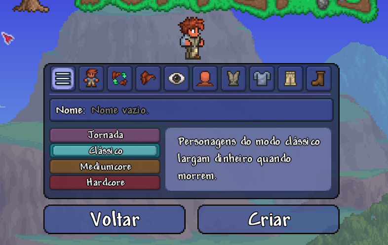
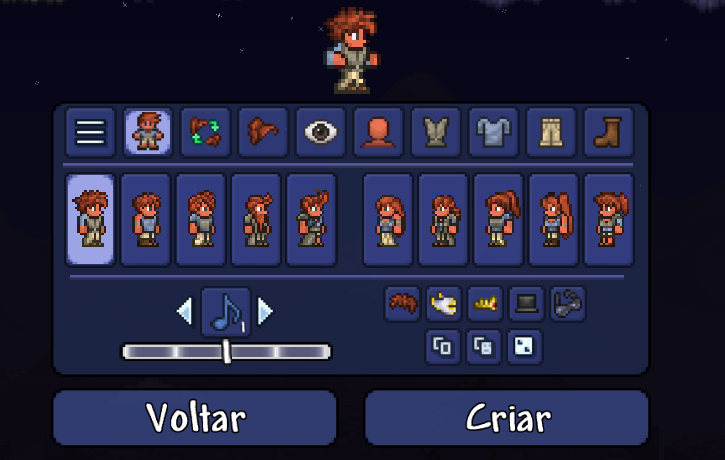
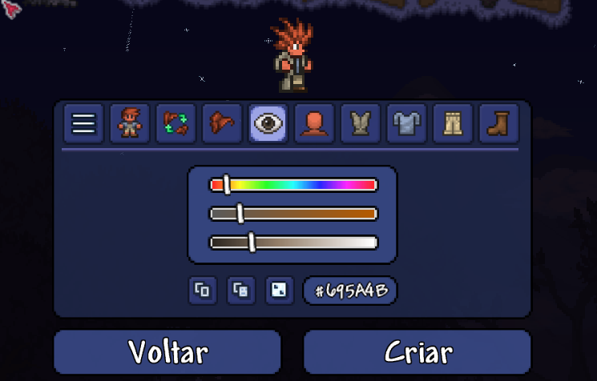
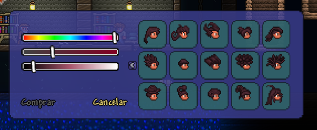

O Terrariano é o protagonista do jogo Terraria, controlado pelo jogador. Por ser
100% controlado pelo
jogador, sua história, nome, gênero, motivos, maneira de agir, tudo depende apenas do jogador,
embora
possa ser assumido que o Terrariano é altamente inteligente, devido a sua grande capacidade
inventiva e de combate.
Criação do personagem
Antes de iniciar uma aventura, o jogador pode criar seu personagem e definir diferentes
características visuais e dificuldades, sendo elas Jornada, Clássico,
Mediumcore e Hardcore.

Imagem da escolha de nome e dificuldade do personagem
Também é possível escolher elementos como cabelo, cor da pele, cor dos olhos, roupas e outras
características de aparência.
Imagem da mudança do padrão das roupas e do gênero do personagem

Imagem da customização do cabelo

Customização das cores dos olhos, camisa, calça, cabelo e sapatos
Classes e estilos de jogo
Terraria não possui um sistema de classes fixas. O estilo do personagem depende principalmente dos
equipamentos utilizados pelo jogador.
Melee
A classe Melee é focada principalmente em defesa, permitindo a
utilização de armas de combate corpo a corpo. Espadas, lanças e
outras armas podem ser utilizadas nesse estilo. A alta defesa característica de muitos equipamentos
dessa classe pode facilitar a sobrevivência, especialmente para jogadores que ainda estão se
familiarizando com o jogo.
Ranged
A classe Ranged, como já subentendido pelo nome, é focada em ataques
à distância. Dentre os itens possíveis, temos arcos, armas de fogo
e outras armas de longo alcance. A classe Ranged se beneficia
bastante não somente pela variedade de arcos e armas, mas também
pelos diferentes tipos de munição, que possuem diferentes efeitos
e danos dependendo do material utilizado em sua criação.
Magic
A classe Magic utiliza armas mágicas para causar dano aos inimigos.
Essa classe depende muito da utilização eficiente da mana para usar
suas armas. Uma alternativa para lidar com esse problema é a
utilização de poções de regeneração de mana, que são itens
essenciais para essa classe.
Summoner
A classe Summoner utiliza equipamentos capazes de invocar criaturas
que auxiliam o jogador durante o combate. Uma das principais armas
dessa classe é o chicote, um item que cria "marcas" nos inimigos,
fazendo com que suas invocações priorizem o inimigo marcado. Essas
marcas também podem, dependendo do chicote, causar diferentes tipos
de dano aos alvos marcados.
Customização visual
Além das características escolhidas durante a criação, Terraria possui diferentes opções para alterar a
aparência do personagem durante a aventura.
Cabelo
O jogador pode escolher diferentes estilos de cabelo e alterar sua cor durante a criação do
personagem.

Tipos de cabelo disponibilizados pela cabeleireira durante a aventura
Roupas e cores
A aparência das roupas também pode ser personalizada por meio de diferentes cores e itens
cosméticos.
Site com todas as tinturas
Itens cosméticos
Alguns itens podem modificar a aparência do personagem sem necessariamente alterar suas
características de combate, podendo ser usados para deixar seu personagem com uma aparência
mais "divertida". Os cosméticos são divididos em diferentes conjuntos, a depender da maneira
de se obtê-los.
Site com todos os cosméticos
Pets
O jogador também pode utilizar determinados itens para obter companheiros visuais que acompanham seu
personagem durante a aventura. Os pets têm diferentes maneiras de serem obtidos. Os pets são
puramente
cosméticos, não interferindo durante a jornada.
Site com todos os pets